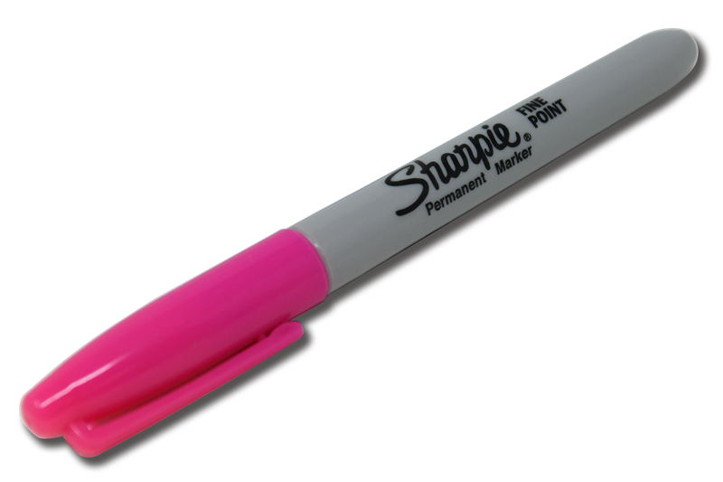

I always carry an array of differnt pencils, pens, markers, bassically anything you can write, draw, or color with I have it. I constantly want to draw or take notes so I need to keep a couple different items with my just in case! I also never know where any of these items are. Bottom of my bag? In the side pocket? wedged between my computer? its always a fun surprise!
